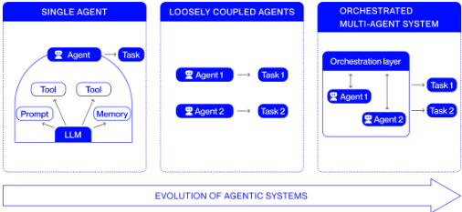
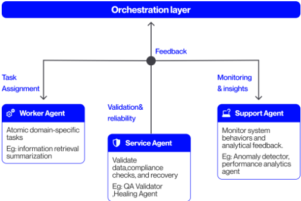
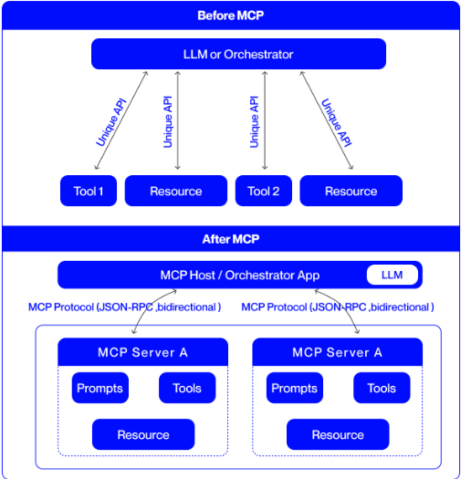
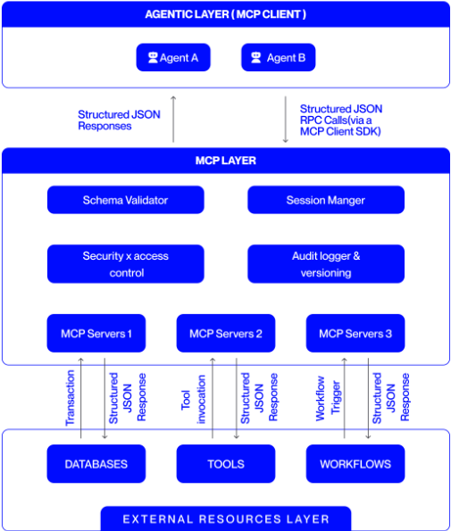
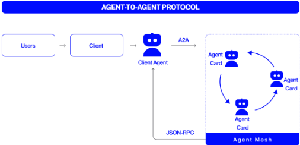
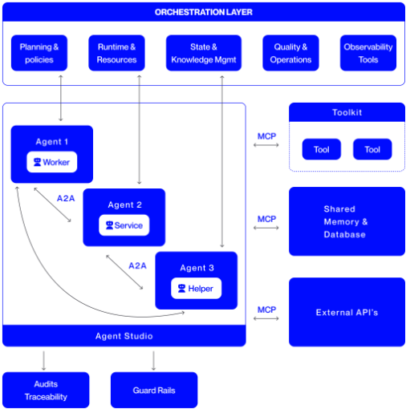

多智能体系统的编排：架构、协议与企业级采用
论文面向企业级多智能体系统（MAS）的落地问题：单 Agent 难以应对复杂动态任务，而多 Agent 协作长期缺乏统一的编排架构与标准化通信机制。作者综合现有实践提出统一编排层框架，整合规划与策略管理、执行与控制、状态与知识管理、质量与运营四大组件，并系统刻画 MCP（规范 Agent 访问外部工具与上下文数据）与 A2A（规范 Agent 间协商、委托与协调）两个互补协议构成的通信底座，辅以治理与可观测机制保障可审计与合规。论文以金融核保、软件工程、客服等行业案例说明架构价值，并指出通信开销、成本与治理等规模化挑战。核心结论是：多 Agent 系统的可靠性不仅来自单个 Agent 的能力，更来自编排层对规划、执行与验证的整体治理。对以'用好模型'为定位的工程团队，这是一份把编排、协议与治理串成整体蓝图的体系化参考。
如何把各自独立、任务狭窄的单 Agent 演进为可编排的多智能体系统：现有部署缺乏统一的编排架构、标准化的 Agent-工具与 Agent-Agent 通信协议，以及配套的治理与可观测机制，导致企业难以构建可扩展、可审计、符合策略约束的多 Agent 系统。
提出以编排层（orchestration layer）作为多 Agent 系统的控制平面，包含四个组件：规划与策略管理（目标分解 + 治理约束嵌入）、执行与控制（并发与依赖管理、遥测收集、动态资源分配）、状态与知识管理（checkpoint/工作流状态与可检索上下文分离，知识单元连接外部数据源并暴露为可检索上下文）、质量与运营管理（schema 校验、异常检测、沙箱测试与受控部署）。通信上采用双协议：MCP 以 client-server 模式标准化工具/资源/提示的调用，支持会话管理与审计；A2A 采用对等通信模型，消息携带结构化元数据，配合加密签名与基于角色的路由。再以验证、事件日志、最小权限、持续监控等护栏实现安全、治理与可观测。
案例（引自文献[15]）：保险业自主 Agent 解析保险申请及支持文档的准确率超过 95%，显著加快保单签发
案例（引自文献[15]）：某房贷机构结合 Document AI 与 Decision AI Agent 处理贷款文书，审批流程提速 20 倍，处理成本降低 80%
案例（引自文献[17]）：某大型银行以多 Agent '数字工厂'现代化遗留核心软件，早期采用团队的开发时间与人力减少超过 50%
引用的研究：客服场景中最多 80% 的常见支持问题可由 AI Agent 在无人工干预下解决，全 Agent 驱动工作流的解决时间缩短 60-90%
论文本身未开展自建实验，上述数字均为引用的行业案例数据
本文不提出新算法或新系统，而是做综合与形式化：将分散的编排要素（规划、策略、状态、质量）整合为统一架构蓝图，并对 MCP 与 A2A 的互补分工（工具访问 vs. 同侪协作）给出系统化技术刻画，桥接概念架构与企业级实现设计原则；与 LangChain、AutoGen 等单点框架工作相比，强调协议标准化、治理与可观测的整体视角。
相关度级别：high
命中能力域：3.3 Agent 架构与工具使用 | 3.4 多智能体协作 | 3.5 评测与可靠使用 | 3.1 上下文工程与记忆
理由：论文直接命中团队 3.3（Agent 架构与工具使用：编排层设计、MCP 工具调用协议、规划与控制）与 3.4（多智能体协作：A2A 通信协议、任务分解与角色分工）两个核心能力域，并实质覆盖 3.5（可靠性、治理、成本与效率的讨论）与 3.1（状态与知识管理组件、可检索上下文组织）的次级内容。对构建 Agent 自动化工具与研发提效流程的团队而言，这是把编排、协议、治理串成整体蓝图的体系化参考，可直接用于内部多 Agent 工具的架构评审与协议选型；需注意它是综述/立场性文章，无自建实验，价值在架构模式与设计原则而非可复现的新方法。
建议动作：深入精读并做内部分享
arXiv:2601.13671v1 [cs.MA] 2026年1月20日
Apoorva Adimulam 应用智能体 AI（Applied Agentic AI），Skan AI，美国门洛帕克
Rajesh Gupta 应用智能体 AI（Applied Agentic AI），Skan AI，美国门洛帕克
apoorva.adimulam@skan.ai rajesh.gupta@skan.ai
摘要——编排式多智能体系统代表了人工智能（AI）演进的下一个阶段，其中自主智能体通过结构化的协调与通信进行协作，以实现复杂的共享目标。本文整合并形式化了此类系统的技术构成，提出了一个统一的架构框架，将规划、策略执行、状态管理和质量运营整合到一个连贯的编排层之中。本工作的另一项主要贡献是对两种互补通信协议的深入技术阐述——模型上下文协议（Model Context Protocol，MCP），它标准化了智能体访问外部工具与上下文数据的方式；以及智能体间协议（Agent-to-Agent protocol，A2A），它负责管理对等协调、协商与委派。这两种协议共同建立了一个可互操作的通信基座，使分布式智能体群体能够进行可扩展、可审计且符合策略的推理。除协议设计之外，本文还详细阐述了编排逻辑、治理框架与可观测性机制如何共同维系系统的连贯性、透明性与可问责性。通过将这些要素综合为一个连贯统一的技术蓝图，本文对编排式多智能体系统进行了全面论述——在概念性架构与企业级 AI 生态系统中可直接实施的设计原则之间架起了桥梁。
索引术语——智能体编排、智能体间协议（Agent-to-Agent protocol，A2A）、动态任务分配、模型上下文协议（Model Context Protocol，MCP）、多智能体系统、可观测性、状态管理、系统治理
由大语言模型（Large Language Model，LLM）驱动的智能体格局已经发生了显著转变。早期部署优先考虑孤立的、面向特定任务的智能体，即运行范围狭窄的高度专业化系统。然而，当代趋势正指向协作式智能体生态系统。这一转变与分布式计算领域更广泛的发展相呼应：价值较少源于个体能力，而更多源于集体内部经编排的交互。
若干技术驱动因素解释了为何向多智能体（multi-agent）架构的转向正在此时涌现，包括：
Sumit Kumar Applied Agentic AI Skan AI Bengaluru, India sumit.kumar@skan.ai
近期的行业信号凸显了这一转变的势头。在企业层面，普华永道（PwC）已将其 Agent OS [3] 定位为多智能体协调的“交换机”，强调跨企业职能的可组合性与互操作性。类似地，埃森哲（Accenture）的 Trusted Agent Huddle [4] 为安全的跨组织工作流引入了治理机制，并与新兴的智能体间协议（Agent-to-Agent protocol，A2A）保持一致。与此同时，技术生态内的研发步伐也在加快，LangChain、AutoGen、IBM Watsonx Orchestrate 以及 Google 的 Agent Development Kit 等框架为协调、协商和基于角色的任务委派提供了模块化基础设施。这些举措共同预示着行业正快速迈向标准化与运营就绪。
本文余下部分从概念基础逐步推进到实际实现。第 II 节追溯智能体系统向编排式集体的演进历程，第 III 节确立多智能体系统的架构组成并概述其核心组件。第 IV–VII 节对这些组件进行深入展开，考察专业化智能体角色、编排逻辑、通信协议与治理机制如何共同构成编排式智能的技术骨干。第 VIII 节给出真实世界的案例研究，展示这些架构在各行业中的实际影响。第 IX 节讨论扩展多智能体系统所面临的挑战与风险，以及旨在提升效率、可靠性与互操作性的未来研究方向。最后，第 X 节总结关键洞见，阐明编排式多智能体系统如何能够作为企业级 AI 生态系统的基础。
智能体系统建立在自主实体的原则之上：这些实体能够感知其环境、做出决策并采取行动以实现特定目标。智能体系统以自主性、反应性、主动性和社交能力为定义特征，超越了脚本化自动化的范畴，能够以自适应方式运行。

早期部署依赖于单一智能体。这类单体系统没有协调开销，非常适合范围狭窄的任务，例如解决常见问题解答（FAQ）的客户支持聊天机器人、生成日报的金融机器人，或处理电子邮件与日历管理的个人生产力助手。其可靠性使它们在受限场景中行之有效，但在复杂或动态环境中缺乏可扩展性与适应性。
为解决这些局限，研究与实践转向了松耦合的智能体系统。在这类系统中，多个智能体以相对独立、交互最少的方式并行运行。这种架构支持专业化分工，并使单个智能体无法实现的集体行为得以涌现。近期的例子包括：科学研究助手 [5]，其中文献检索、推理与验证智能体协同工作以加速科学发现；协作式 AI 编程环境 [6]，其中不同的智能体分别负责编写、审查和测试代码；新闻流水线 [7]，其中聚合、事实核查与综合工作分布在多个智能体之间；以及自动驾驶生态系统 [8]，其中感知、导航与协调智能体松散协作以确保安全运行。图 1 呈现了上述智能体系统的演进过程。
构建一个经过编排的多智能体系统（Multi-Agent System, MAS）并不仅仅是简单地将多个自主智能体连接起来。它需要设计专业化的角色，建立一个支配智能体间交互的协调层，并定义清晰的通信协议，使智能体能够有效地交换信息。
专业化智能体作为自主组件运行，在系统内执行定义明确的任务，各自为集体目标贡献一项独特的能力。它们的交互通过一个编排层进行协调，该编排层决定执行顺序、管理依赖关系，并将各个输出整合为连贯的运行流程。这些交换依赖于通信协议，由通信协议对信息在各智能体之间的表示与传输方式进行标准化，从而确保语义一致性，并使编排层能够维持同步且可解释的系统行为。当这些基础组件付诸实际应用时，它们共同使得那些需要在多个决策点上进行协同智能的复杂领域特定工作流得以实现。
以下各节将对这些技术要素进行更深入的考察，重点关注智能体专业化、编排机制与通信策略，它们构成了多智能体架构的基础组件。
在多智能体系统中，专用智能体是自主组件，旨在更宏观的架构中执行范围狭窄、角色特定的任务。每个智能体通常以大语言模型（LLM）作为其认知核心，使其能够感知输入、对输入进行推理，并在明确定义的运行边界内采取行动。通过分配检索、推理、验证或监控等不同角色，系统将复杂目标分解为更小的、相互协调的子任务。这种分工促进了模块化与协作，使各智能体能够互补彼此的能力、减少冗余，并取得超越单一通用智能体的成果。通过这种专业化，多智能体系统在保持各组件功能与职责清晰明确的同时，获得了更高的精确性、可扩展性与鲁棒性。
以下是专用智能体的主要类别：
在金融核保场景中，质量保证智能体可以验证所提取的客户数据，并将其与合规要求进行交叉核对。诊断智能体可以检查不一致或缺失的数据，将问题追溯至相应的责任模块，并生成结构化的错误报告，为纠正措施提供依据。

自愈智能体可以通过重新运行失败的提取任务或重置工作流状态来恢复正常运行，从而对这一能力加以扩展。自愈智能体侧重于当前活跃的系统状态，而升级调度智能体则负责管理评分组件及相关工作流的版本转换，确保更新能够无缝部署，且不中断正在进行的运营。
图2总结了多智能体系统中上文讨论的各类专用智能体。纵观这些专用智能体类别，近期研究 [9] 与企业应用均表明，协同的角色分化能够显著提升多智能体系统的可靠性与可扩展性。
智能体编排层构成多智能体系统的控制平面，将各个自主组件转变为一个连贯一致、以目标为导向的集体。如果没有编排，即使是能力很强的智能体也面临工作重复、逻辑不一致或自主性失去约束而偏离系统目标的风险。编排层负责解释系统级目标，将其分解为可执行的子任务，协调这些子任务的执行，并确保所产生的每一项输出都符合策略、上下文和质量要求。
编排层的核心是规划单元（planning unit）与策略单元（policy unit），它们将高层目标转化为结构化的执行计划。
它们的目的有两个方面：规划单元作为目标分解引擎运行，确定需要完成哪些任务以及以何种顺序完成；而策略单元则嵌入领域约束与治理约束，以定义这些任务应如何执行。在金融核保工作流中，规划单元将数据提取、信用评分等任务分配给相应的工作智能体（worker agents）。策略单元定义运营约束与治理约束，并与控制单元（将在下一小节中介绍）协同，确保服务智能体（service agents）在整个执行过程中落实这些约束。
二者协同，将抽象目标转化为一个有向执行模型，该模型规定了由谁执行哪项任务、按何种顺序执行、遵循何种规则，以及接受何种监督。
一旦任务完成规划与分配，编排层便作为一个分布式控制系统运行，驱动各专用智能体依次经历初始化、执行、验证与完成等阶段。
在此阶段，执行单元确保工作智能体（worker agents）所执行的指定任务平稳运行，并管理支持智能体（support agents）的遥测数据收集。遥测数据被转发至控制单元，控制单元可将修复或验证任务委派给服务智能体（service agents），以维持运行稳定性。控制单元还管理各工作流之间的并发与依赖关系，允许并行执行并在关键检查点进行同步，以保持一致性。此外，它还负责任务优先级排序与动态资源分配，以在不同工作负载下平衡吞吐量、成本与确定性。
为了使控制单元实现同步并保持各工作流之间的连续性，编排层依赖于状态与知识管理组件。该组件既充当数据总线，又充当知识库。
状态单元管理检查点、工作流进度、智能体状态和活动日志。支持智能体（support agents）监控状态变化与性能异常，而服务智能体（service agents）可被调用以从状态单元恢复检查点，从而保持工作流的完整性。知识单元通过连接外部数据源，并将其以可检索上下文（retrievable context）的形式对外提供，来管理上下文信息与领域特定信息。这确保了工作智能体（worker agents）与编排组件能够基于准确且一致的信息运行。
这种将运行状态与知识状态相分离的做法，保持了模块化、上下文一致性与系统连贯性。
质量与运营管理组件利用其他编排单元生成的遥测数据、状态更新和上下文数据，评估系统性能、验证结果，并确保被编排的活动保持合规且持续优化。控制单元专注于执行稳定性，策略单元在执行期间定义并强制实施运行约束，而该组件则负责在整个编排层范围内对执行后的结果进行验证与优化。
该组件在将聚合输出整合到共享状态之前，会依据预定义的模式（schema）对其进行验证，从而防止无效数据在工作流中传播。当检测到不一致或违规情况时，该组件会相应地更新状态，并可能调用服务智能体执行诊断或修复操作，以确保持续的完整性与合规性。
该子系统还监控延迟、吞吐量和成功率等指标，利用异常检测来识别偏差并触发预防性干预。它还支持对新组件进行受控部署、测试和沙箱隔离，以便在智能体不断演进的过程中保持稳定性。这些机制共同确保了多智能体运营的韧性、可审计性与持续改进。
该编排模型以一家金融机构的信用风险与欺诈检测工作流为例加以说明，其中由多个专业化智能体协同工作，以确保一致性与合规性。传入的贷款申请由规划单元分解为若干子任务，例如数据提取、风险评估、合规审查和欺诈筛查，同时策略单元嵌入治理约束，包括放贷法规与机构风险阈值。执行与控制组件管理并发任务执行、收集遥测数据，并在需要时调用服务智能体进行恢复。状态与知识管理组件维护申请人状态、历史记录和监管参考资料，以保证上下文连续性；而质量与运营组件则依据策略标准对结果进行验证，并运用性能洞察来优化未来的工作流。
总体而言，这些机制表明，多智能体系统的可靠性不仅源于智能的智能体，还源于对规划、执行与验证进行治理的编排层，从而实现可扩展且符合策略的性能表现。
在编排框架的基础上，智能体通信层通过使智能体与外部工具能够交换信息、控制信号和共享上下文，将协调付诸实施。编排定义了由谁行动以及何时行动，而通信则确保这些行动保持同步且可被理解。传统协议依赖于静态的请求-响应式交换，缺乏上下文共享或策略执行的机制。为解决这些局限，两项新兴标准——模型上下文协议（Model Context Protocol, MCP）与智能体间协议（Agent-to-Agent, A2A）——为工具交互以及专业化智能体之间的对等协作建立了结构化、可互操作的通信。后续小节将更详细地探讨这些协议。

The Model Context Protocol (MCP) [10] provides the standardized communication interface that operationalizes the previously described orchestration flow between agents and external systems like tools, data services, and contextual repositories. As illustrated in Fig. 3, MCP mediates every external invocation through a defined interface that enforces schema consistency, access control, and auditability. This allows the execution unit to dispatch tasks confidently, ensuring that each agent's external interactions conform to orchestration policies and operational rules.
Within the orchestration architecture, MCP follows a client-server design in which agents or orchestrators act as clients that request external capabilities such as tools, resources, or prompts, while connected systems expose these as standardized, callable services. Through MCP, the planning and control units translate defined tasks into executable tool calls and govern how and when agents access these resources in compliance with policy constraints. MCP's session management supports both stateless and stateful exchanges, allowing context continuity across multi-step

工作流。这些交换会被记录并与编排状态同步，使状态与知识管理组件能够保持一致性，并使质量与运维组件能够验证合规性以及与预期结果的对齐情况。
如图 4 所示，MCP 充当高层编排计划与底层工具执行之间的操作桥梁。它将规划好的目标转换为结构化的、符合策略的调用，并将执行数据反馈到编排记忆和质量循环中。诸如 ScaleMCP [11] 之类的扩展可在各智能体之间动态同步工具清单，而 AgentMaster [12] 则将 MCP 与 A2A 等智能体间通信框架相集成，以在编排的多智能体系统中支持多模态协作与信息检索。
MCP 规范的是智能体与工具及数据之间的交互方式，而智能体间（Agent-to-Agent，A2A）协议 [13] 则定义了各专用智能体彼此之间的标准化通信。它在保持互操作性、可追溯性与安全性的同时，支持跨分布式生态系统的协商、委托与协调 [14]。MCP 与 A2A 共同构成了智能体通信的双重基础——MCP 用于工具访问，A2A 用于对等协作（图 5）。

通过 A2A，工作智能体可以委托子任务或共享中间结果，服务智能体可以传递诊断信息或恢复状态，支持智能体则可以广播遥测数据或性能洞察，为整体进展提供参考。这种对等层面的交换确保任务依赖关系得到动态管理，并使各智能体无需集中式干预即可化解相互依赖。控制单元对这些交互进行监督，以确保符合策略并与更宏观的编排计划保持同步；同时，通信记录会被捕获到状态与知识管理组件中，以支持可追溯性与恢复。
A2A 采用对等通信模型，既可直接通信，也可通过编排器中介，从而实现可靠且经过身份验证的消息交换。每条消息都携带结构化元数据和标准化载荷，确保异构实现之间的一致性。强健的安全控制机制（包括加密签名和基于角色的路由）保证了消息完整性与策略合规性。
尽管面向对等通信，A2A 仍受编排层监督，编排层对交换进行验证和同步，以保持与全局工作流的一致性。新兴研究正在探索可扩展的混合架构，将 A2A 与 MCP 相结合，以在企业级智能体系统中实现多模态、自适应的协调。
确保多智能体系统的可靠性依赖于嵌入在编排与通信机制中的保障措施。在编排层内，控制、质量与运营管理单元通过验证、监控和恢复机制来实施安全与治理，以维持合规性与运营完整性。类似地，MCP 和 A2A 协议嵌入了模式验证、经过身份验证的交换以及访问控制等保护措施，以确保通信的安全性与可解释性。核心护栏机制可缓解幻觉并强制执行一致性检查，防止智能体产生不安全或相互冲突的输出。这些保护措施还得到内部审计、事件日志记录和最小权限策略的强化，从而促进透明度、可问责性与可追溯性。

贯穿整个系统。隐私约束将智能体限制为仅共享与任务相关的信息。持续监控通过支持智能体以及质量与运营管理单元来执行，跟踪延迟、吞吐量与正确性，以评估性能并检测漂移。这些实践共同将多智能体系统从实验性的集合体转变为可靠、可审计且持续改进的基础设施，在自主性与控制之间实现平衡。
总而言之，经过编排的多智能体系统的整体架构如图 6 所示。该架构集成了使分布式智能体之间能够进行协调、通信与治理的所有核心组件。其基础是各类专用智能体类型，它们通过标准化协议进行交互，例如用于工具与数据访问的 MCP，以及用于智能体间协作的 A2A。编排层负责监督规划、执行与质量控制，而可观测性与治理模块则确保可靠性、合规性与透明度。这些要素共同构成了一个内聚且可扩展的框架，在结构化编排之下将自主智能付诸运行。
多智能体 AI 系统正在彻底变革银行、金融服务与保险（BFSI）行业，带来显著的效率提升与投资回报率（ROI）。保险公司正在部署由专用 AI Agent 组成的网络，以实现劳动密集型核保流程的自动化。例如，[15] 中研究的自主 Agent 现在能够以超过 95% 的准确率解析保险申请及佐证文件，从而大幅加快保单签发速度。在 [15] 探讨的另一个用例中，一家抵押贷款机构集成了 Document AI 与 Decision AI Agent 来处理贷款文书工作，使审批流程速度提升了 20 倍，同时将处理成本削减了 80%。类似地，[16] 提出了一种面向财产险理赔核保的多智能体自动化框架，其中各专用 Agent 协同工作，评估理赔文件、审核损失估算并核验保单条款。此类多智能体系统明显优于人工流程与单 Agent 自动化，在 BFSI 领域展现出强有力的价值主张。
多智能体系统在软件工程领域也正展现出其价值。一家大型银行近期应用了智能体式 AI（agentic AI）“数字工厂” [17] 来对其遗留核心软件进行现代化改造，该软件包含数百个应用程序。不同的 Agent 承担了专门的编码任务：一个 Agent 自动为现有的遗留代码编写文档，另一个 Agent 生成新的代码模块，其他 Agent 审查其同伴编写的代码，还有更多 Agent 对这些模块进行集成与测试。这种多智能体架构支持并行执行和持续的代码质量检查，减轻了曾拖慢纯人工团队的协调负担。在实践中，该方法使该银行早期采用团队的软件开发时间和工作量减少了 50% 以上。
多智能体 AI 的成功正在推动其在各行业的广泛采用。在客户服务领域，企业正在借助智能体 AI（agentic AI）重新构想呼叫中心：Agent 不再仅仅辅助人工客服代表，而是自主处理常规咨询和问题。研究表明，多达 80% 的常见支持事件可以由 AI Agent 在无需人工干预的情况下解决，而在完全由 Agent 驱动的工作流中，解决时间可缩短 60-90%。与此同时，医疗保健等行业正在探索多智能体架构，其中一个 Agent 分析患者症状或医学文献，另一个 Agent 则提出治疗方案，而这一切都在医生的监督下进行。从金融和保险到软件开发、法律研究和医疗保健，随着各组织认识到多智能体系统相比人工或单 Agent 方法具有可衡量的性能优势，多智能体系统正被迅速采纳。
随着多智能体系统的规模化，效率、成本和治理方面的关键挑战随之显现。除非对工作流进行精心管理，否则众多 Agent 之间的协调可能造成通信开销、消息拥塞和性能瓶颈。采用成本依然可观，企业必须投资于编排软件、具备专业技能的工程团队以及持续监控基础设施，以确保可靠性与合规性。治理带来另一重困难，因为去中心化的自治使监督与问责变得复杂。从大语言模型（LLM）继承而来的风险，例如幻觉、偏见和数据泄露，在 Agent 相互交互时会被放大，引发安全、伦理和隐私方面的担忧，需要严格的评估与控制框架。
未来的研究聚焦于让编排更智能、更安全、更具适应性。混合与联邦式设计旨在平衡集中式控制与去中心化灵活性，而语义编排则寻求将任务动态匹配给能力最强的 Agent。联邦学习与跨领域协作的进展有望实现安全的知识共享，而无需暴露原始数据。标准化的基准测试（benchmark）、仿真测试床和开源编排框架将进一步支持透明的性能比较，并降低进入门槛。这些方向共同推动多智能体系统在企业与社会各领域迈向可扩展、可问责且可信的部署。
智能体系统已经从执行单一狭窄任务的单个 Agent，演进为松耦合的多智能体架构，如今进一步发展为通过协调来确保一致性、规模与可靠性的编排式集体。最新进展表明，编排式系统不仅切实可行，而且已经在实际部署中创造价值，涵盖从银行、金融服务与保险（BFSI）领域的理赔处理与欺诈检测，到医疗诊断与软件工程等多个领域。基准测试（benchmark）与案例研究证明，与人工或单 Agent 方法相比，编排式系统在生产力、错误减少和可扩展性方面均取得了可衡量的提升。
展望未来，企业正迈向动态生态系统，其中的 Agent 可以像人类团队一样，根据任务进行组建、解散与重组。为实现这一愿景，业界必须投入于支持互操作性的开放协议、标准化的基准测试以及共享的研究基础设施。有了这些基础，编排式多智能体系统将能够成熟为支撑大规模企业智能的可靠且具适应性的骨干。